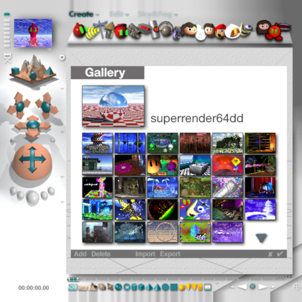
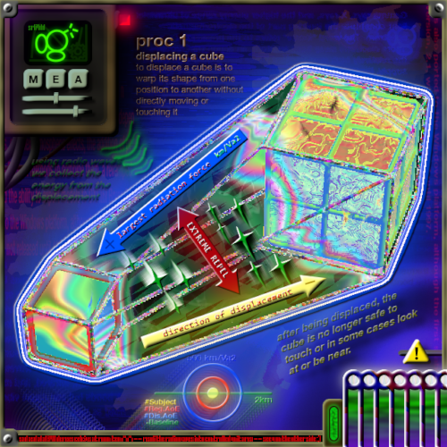

Hyperspherilococci B, C, A, D
This was the first of my renders that use paint.net a lot, so much so that it doesn't really look like Bryce anymore.
The main trees and islands - pretty much everything that's a sphere - is the only Bryce asset in the images. Everything else is good old paint.net. Granted a lot of the effects like the fiery border and background patterns. At the end of this page is a list of the most frequent plugins I use.
To get the pixelated look I usually work in a smaller picture size like 160x160. Then I'll scale it up using the Nearest Neighbour resampling option. For the Bryce parts, I rendered them in 160x160 with Anti Aliasing off. Also in other programs it might not be called Nearest Neighbour but Closest or Nearest or something like that.
And yes, hyperspherilococci is complete gibberish.
Also, there's supposed to be 4 variations but webm sometimes skips frames. All 4 can be properly seen here.
To get the pixelated look I usually work in a smaller picture size like 160x160. Then I'll scale it up using the Nearest Neighbour resampling option. For the Bryce parts, I rendered them in 160x160 with Anti Aliasing off. Also in other programs it might not be called Nearest Neighbour but Closest or Nearest or something like that.
And yes, hyperspherilococci is complete gibberish.
Also, there's supposed to be 4 variations but webm sometimes skips frames. All 4 can be properly seen here.
"Socials"
This one doesn't have a name but it was in a file called "Socials." I remember I started on it a while back, forgot about it and then came back a few months later to finish it. Maybe the original idea was for it to be a social media platform with the Bryce UI?

This piece also uses Nearest Neighbour scaling and no Anti Aliasing a lot. In Bryce the sky thumbnails are not anti aliased. It's easier to tell when you have the actual window in paint.net. A lot of the renders in the preset holes were cropped to fit. You'd think the pixelation would make them unrecognisable but they are actually still pretty recognisable. Specifically my fan Jamiroquai cover, the floats, and the nuke are easily spottable.
As for the icons on the top, Bryce does anti alias them. The renders of the icons were not anti aliased (they could have been but I guess I just didn't so cutting them would be easier and not leave white outlines. In case you couldn't tell, I'm writing this in retrospect).
To mimic this, you can just scale the images a tiny bit and they'll become all blurred if you use Bicubic or Bilinear resampling. It's crude but it works quite well.
The Bryce background wasn't made using this method mentioned in CTC because the Bryce UI doesn't shrink small enough. You can see the shelf with the objects extends to the end of the screen. The smallest size of the Bryce 3 UI isn't a square, so I resized the bottom bits.
Why not just extend the height of the bryce document? Well...
...it's fine.
As for the icons on the top, Bryce does anti alias them. The renders of the icons were not anti aliased (they could have been but I guess I just didn't so cutting them would be easier and not leave white outlines. In case you couldn't tell, I'm writing this in retrospect).
To mimic this, you can just scale the images a tiny bit and they'll become all blurred if you use Bicubic or Bilinear resampling. It's crude but it works quite well.
The Bryce background wasn't made using this method mentioned in CTC because the Bryce UI doesn't shrink small enough. You can see the shelf with the objects extends to the end of the screen. The smallest size of the Bryce 3 UI isn't a square, so I resized the bottom bits.
Why not just extend the height of the bryce document? Well...
...it's fine.
Displacing 101
Probably my most complex of the art here, and definitely my favourite!

This is inspired by an art piece from aitrui (sorry for the reddit link, the image is everywhere but it seems to be all reposts). It's so elaborate and random, it almost feels like a hallucination. I'd love to see more by the artist but I don't even know if aitrui is the actual artist. the name is in a pretty open part of the image but searching it brings up nothing.
It's like everything surrounding the image is a hallucination too...
One of the main plugins I used for my rendition was the Bevel Object plugin. You can find a download for it at the end of the page and I highly encourage you to download it. I'll save my gushing over the bevel tool for the end.
Another amazing effect is the Trail effect. Since you can change spacing and distance you can get a variety of results. It's used for the circle diagram at the bottom and the green stars in the middle.
There's a bunch of random text everywhere in the image. I just wanted to make it noisy and chaotic, give it a similar feel to the inspo. If you want more advice, the blending modes are also very very good. Specifically Multiply, Glow, Overlay, Negotiation, and Xor if you're feeling really chaotic. They can give you really interesting colours and combos. It's almost like opening a third eye and seeing a new colour spectrum or something.
There's also a little marquee at the bottom of the image, which may or may not have been carried over to this site!
It's like everything surrounding the image is a hallucination too...
One of the main plugins I used for my rendition was the Bevel Object plugin. You can find a download for it at the end of the page and I highly encourage you to download it. I'll save my gushing over the bevel tool for the end.
Another amazing effect is the Trail effect. Since you can change spacing and distance you can get a variety of results. It's used for the circle diagram at the bottom and the green stars in the middle.
There's a bunch of random text everywhere in the image. I just wanted to make it noisy and chaotic, give it a similar feel to the inspo. If you want more advice, the blending modes are also very very good. Specifically Multiply, Glow, Overlay, Negotiation, and Xor if you're feeling really chaotic. They can give you really interesting colours and combos. It's almost like opening a third eye and seeing a new colour spectrum or something.
There's also a little marquee at the bottom of the image, which may or may not have been carried over to this site!
Paint.net Effects
This is a list of some of my favourite plugins, plus a download link, plus an explanation of why it's good.
- Bevel Object - holy shit the bevel object effect. I could sing this thing's praises for years. The effect looks so old, so cheap, but it's perfect. It's immaculate. All it is is making the object ligher on specific angles and darker on the other angles, but that power is so strong. For retro and weird pieces like the above, the bevel object effect is a huge asset.
- Trail Object - another golden effect. All trail does is copy the object repeatedly in a specific direction and fades it out. You can change spacing, distance, direction, and whether it fades or not. It doesn't sound like much but it's very powerful. You can create effects like dripping water slowly fading, or something moving fast.
- Nebulous Texture - pretty much every texture from MadJik's pack are great, but the Nebulous one is my favourite. It's a rainbow texture but it is created in such a way that it looks like a ripple, like the DDD painting in Super Mario 64. The unique shape also makes it ideal for making stuff rainbow as it looks a lot more unique than a simple rainbow gradient.
- Perlin Noise - pairs well with bevel object and can make shapes look 3D and textures, almost like dirty metal. It can also work as a sky texture but do note it doesn't loop. You can change the colour of the noise and also the type of noise. Islands and Dalmations are also pretty neat.
- Solarize - Inverting an image takes the individual R G B values of each pixel and subtracts them from 255 to get the colour of the new pixel. Solarize does that too but it also laces your pixels with crack and then just does whatever it feels like. It's very good for noisy psychadelic images, but otherwise it may be a bit too extreme.
Keep in mind, the default paint.net plugins are very good as well. Gaussian Blur, Jitter, Frosted Glass, and Drop Shadow are very nice and frequently used.